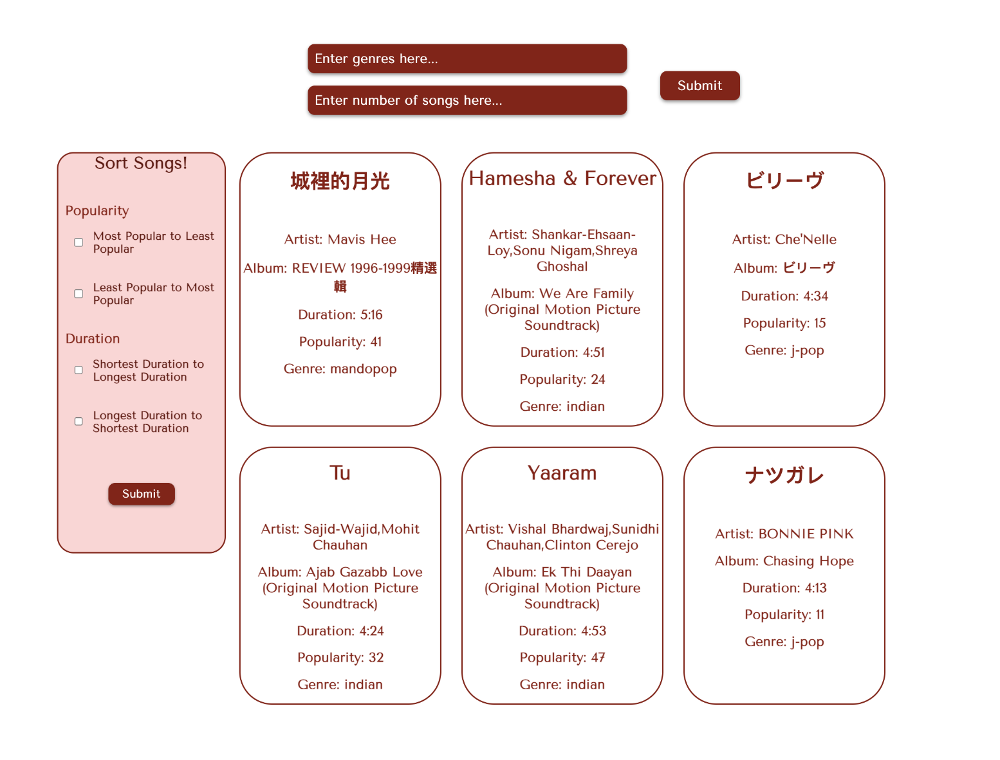
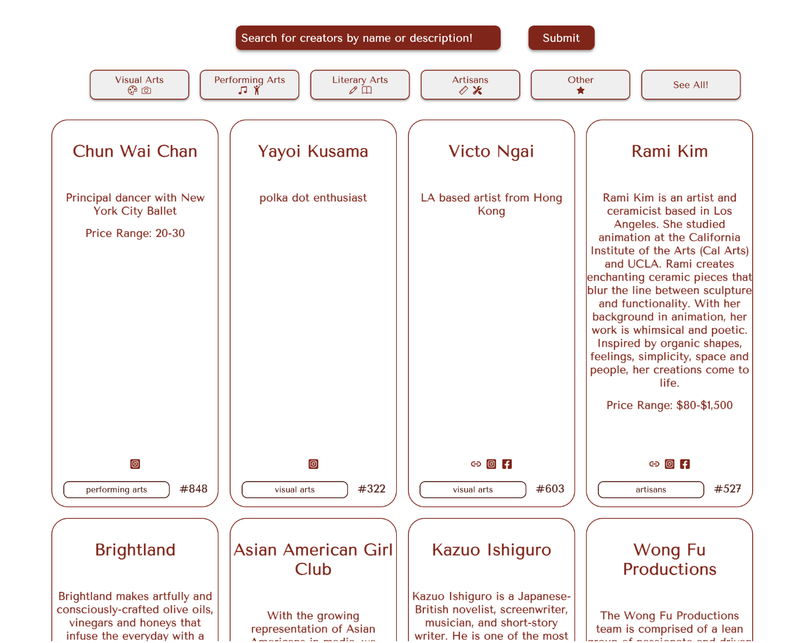

Ablaze
a web app for finding local Asian-owned businesses and Asian American Pacific Islander artists
role
Frontend Developer
timeline
2023
team
Lisa Liong - backend
Karis Ma - backend
Kelly Wei - frontend
---the problem---
With the pandemic, the United States saw a surge in anti-Asian sentiment and the lockdown’s disproportionate effect on Asian-American Pacific Islander (AAPI) owned businesses. Now, a few years later, AAPI individuals and businesses are still feeling the financial and emotional impacts.
Working with a team of three other students, we wanted to support our AAPI community and bring attention to the many talented business owners and creators out there. In addition to being a site for users to find local AAPI businesses, we want our web app to be a resource and platform where business owners and creators can share their work.
For this first prototype, we focused on the Boston area due to the data available and used mock data where needed.
---user stories---
Based off of interviews we conducted with artists, creators, business owners, and consumers, we created a set of user stories to guide our implementation and to ensure our design would actually be useful to users.
-
A Musician:
As a musician hoping to break out into mainstream music, I want to easily promote myself on a platform where others can hear my music on various streaming platforms such as Apple Music or Spotify. I also want people to connect with me through my social media profiles and business email. -
An Author:
As an aspiring author, I want to easily share my words with others who resonate with my AAPI experience or would like to learn more about my history. I want to be able to connect with readers and make sure they have access to my website and social media. -
A Family-Owned Chinese Restaurant:
As a small business owner, I want to promote my business. I am worried about not being able to understand the platform and would like instructions on how I can gain more traction. I want to be able to showcase the menu we have and photos of the delicious food we offer. -
A College Student:
As an Asian-American college student in Boston, I want to search for Asian-owned businesses in my area. I miss food from home, and it would be comforting to be able to find and filter places for Asian restaurants, grocery stores, bakeries, and other types of businesses.
---implementation---
As one of two front-end developers on this project, I handled the pages for AAPI creators and artists. For this prototype, I created a page where users could search and filter for AAPI musicians, connected to the Spotify API.
process shot of page for searching for Spotify artists:
I also created a separate page where users can search for additional types of artists and creators, which is intended to be a place for creators to submit themselves to be displayed on the site. I mocked the data for this version of the web app.
process shot of page with creators displayed:
---takeaways---
This was my first time working with a team to develop a web app, and I learned how important it is to communicate. I learned to communicate effectively with backend developers in order to successfully integrate all of the parts of the project. I also got a lot of practice mocking data for the cases where I was unable to connect to the backend.
In addition, I learned to start early! Some features didn't work out as intended, and we modified our design as we went. Starting early gave us the room to adapt to challenges.
It was also my first time working extensively with React and HTML/CSS, and I really enjoyed it!